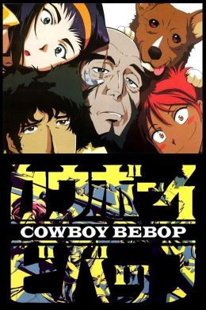

Introduction
Cowboy Bebop (Japanese: カウボーイビバップ, Hepburn: Kaubōi Bibappu) is a Japanese neo-noir science fiction anime television series created and animated by Sunrise, led by a production team of director Shinichirō Watanabe, screenwriter Keiko Nobumoto, character designer Toshihiro Kawamoto, mechanical designer Kimitoshi Yamane, and composer Yoko Kanno, who are collectively billed as Hajime Yatate. The series, which ran for twenty-six episodes (in six “sessions” of four to five episodes each), is set in the year 2071, and follows the lives of a traveling bounty-hunting crew aboard a spaceship, the Bebop. Although it incorporates a wide variety of genres, the series draws most heavily from science fiction, western, and noir films. Its most prominent themes are existential ennui, loneliness, and the inability to escape one's past.
In 2071, roughly fifty years after an accident with a hyperspace gateway which made Earth almost uninhabitable, humanity has colonized most of the rocky planets and moons of the Solar System. Amid a rising crime rate, the Inter Solar System Police (ISSP) set up a legalized contract system, in which registered bounty hunters (also referred to as "Cowboys") chase criminals and bring them in alive in return for a reward. The series' protagonists are bounty hunters working from the spaceship Bebop. The original crew are Spike Spiegel, an exiled former hitman of the criminal Red Dragon Syndicate, and Jet Black, a former ISSP officer. They are later joined by Faye Valentine, an amnesiac con artist; Edward, an eccentric girl skilled in hacking; and Ein, a genetically-engineered Pembroke Welsh Corgi with human-like intelligence. Over the course of the series, the team get involved in disastrous mishaps leaving them without money, while often confronting faces and events from their past: these include Jet's reasons for leaving the ISSP, and Faye's past as a young woman from Earth injured in an accident and cryogenically frozen to save her life.